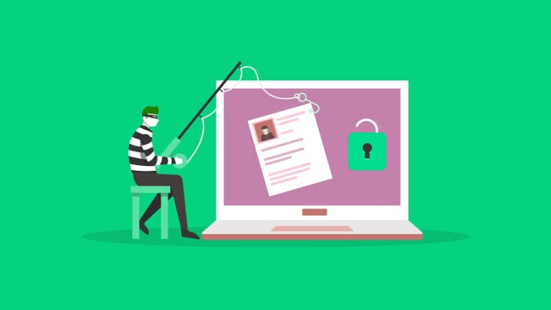
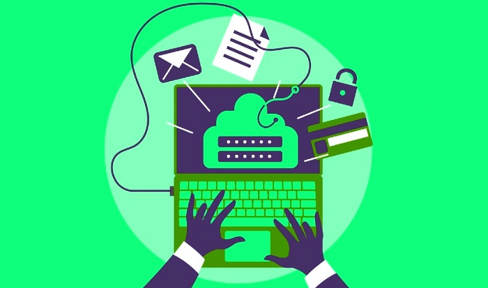

What Is Phishing Attacks?
And Know The Best Practices For Phishing Prevention
And Know The Best Practices For Phishing Prevention
In recent years, phishing has become one of the most common and sophisticated types of cyber attacks. Phishing is a type of fraud in which attackers try to trick victims into giving them sensitive information, such as passwords or credit card numbers. Attackers will often masquerade as a trusted entity in an email or other communication. That’s why businesses must have comprehensive phishing prevention best practices in place.
What Is a Phishing Attack?
Phishing is a type of cybercrime in which a fake mail or web address tricks the victim into taking an action. If the target falls for the trick, backward links or attachments are downloaded that gain access to sensitive personal information.
To be effective, a phishing attack usually takes the guise of a trusted entity; often, either an actual person or an entity that can impersonate a person will suffice for the job. However, phishing attacks can also take the form of messages from a company the victim might have a business relationship with.

Cyberattacks using phishing methods are one of the very first Internet threats to be established and are almost as old as the internet itself. Although traditional methods are still in existence, new twists have been developed on ever more sophisticated phishing techniques.
Top 10 Best Practices to Prevent Phishing Attacks
Below are some top strategies that businesses and organizations can use to protect themselves from phishing attacks.
1. Be wary of hyperlinks and attachments in any email
If an email prompts the reader to safely open an attachment by clicking a link, the email needs to be from a person the reader knows and trusts. An email verification service that the recipient has signed up for can be used to verify an email.
2. Backup system copies
When an attacker compromises system information, IT personnel may use a backup of system files to stay in an uncompromised system and revert if malware or other malicious software is introduced.
3. Ensure HTTPS connections
Users should ensure that HTTPS (not HTTP without the S ) is used when transmitting sensitive information online. This helps ensure the information being conveyed is carried through a secure channel.
4. Avoid entering credentials in a pop-up window
Phishers' websites often use pop-up windows as a means to display information. Unless the website is safe, users should not enter their information for a pop-up window. Most browsers allow users to limit pop-up windows to appear and allow for exceptions to be made for sites they trust.
5. Provide employee education and training
As the company improves the strategies and technologies it is using to prevent scams and transparent phishing, keeping all workers abreast of these developments is crucial. Outsourcing this task to a professional can be another option to consider.
6. Install a robust firewall
A firewall creates a safe environment for all the users on the business network that can counteract malicious code delivered by a phishing email.
7. Use anti-spam solutions
Anti-spam software defends your operating system from the job of known phishers not just by preventing but additionally by blocking email messages. Without such software, these scams may show up in employees' inboxes, increasing the chance of being caught.

8. Provide antivirus protection
It may seem like an obvious tip, but a surprising number of companies do not enforce an up-to-date antivirus security setup policy.
9. Use anti-spying tools
Anti-spyware resources can be used to prevent spyware from attacking the internal systems of employees who may be targeted by hackers for a spear phishing attack. By preventing spyware from gaining access to the internal systems of employees who are targeted by hackers for spear phishing attacks, the likelihood of a successful phishing attempt will be decreased.
10. Increase awareness about DNS pharming attacks
DNS poisoning is a type of phishing attack that has caused considerable concern in recent years. These attacks do not use pop-up windows or carefully crafted emails; rather, they rely on poisoning a victim's local DNS server. If the attack is successful, the user is redirected to a malicious duplicate site when attempting to access the original site. Administrators can prevent such attacks by blocking DNS servers under their administration with security techniques.
To summarize, A phishing scam is an internet-based attack that tricks you into providing sensitive information. Phishing may involve emails that appear to be from a legitimate company or organization but are crafted to trick you into disclosing personal or financial information.